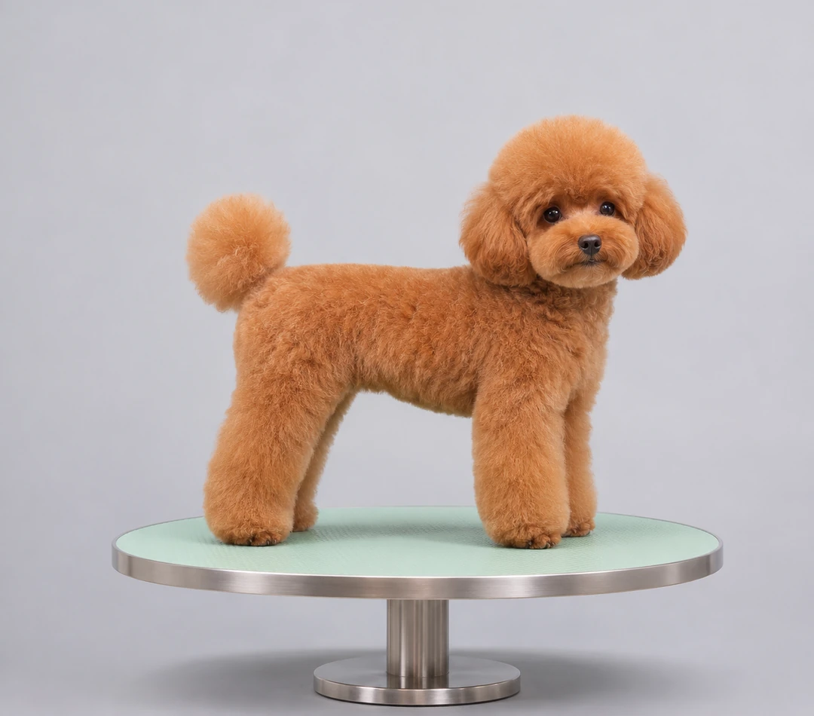
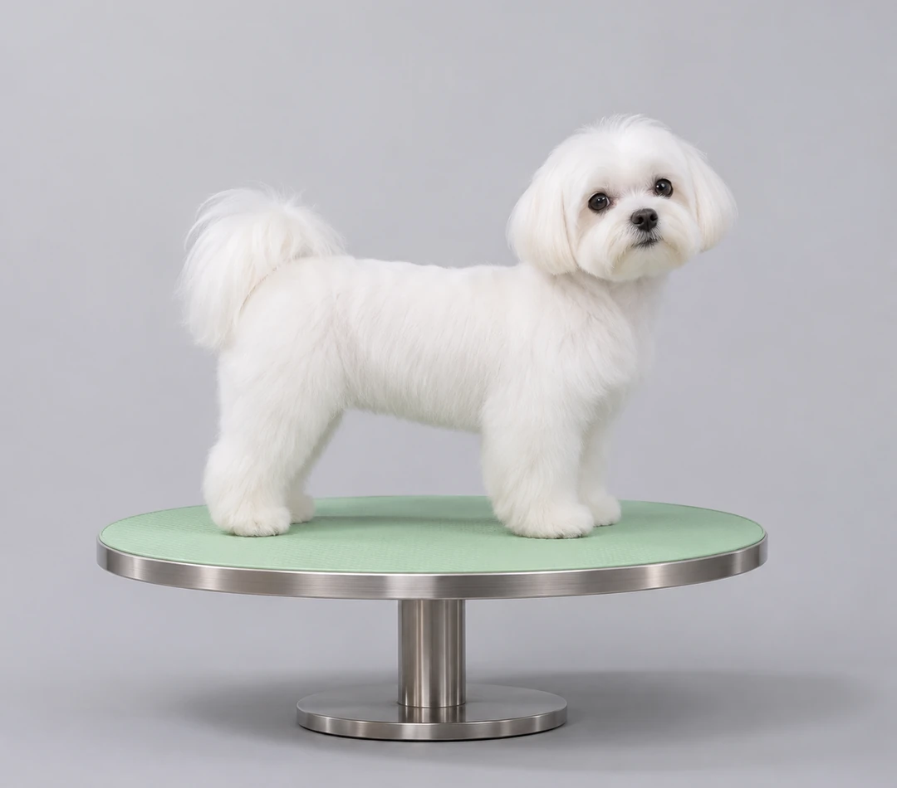
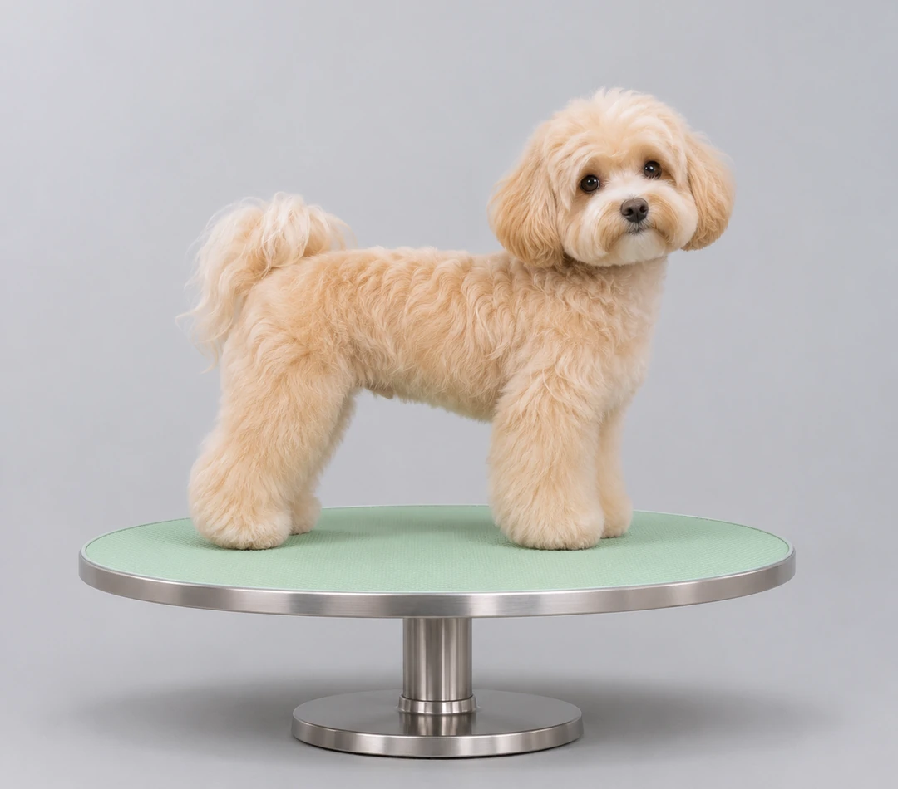
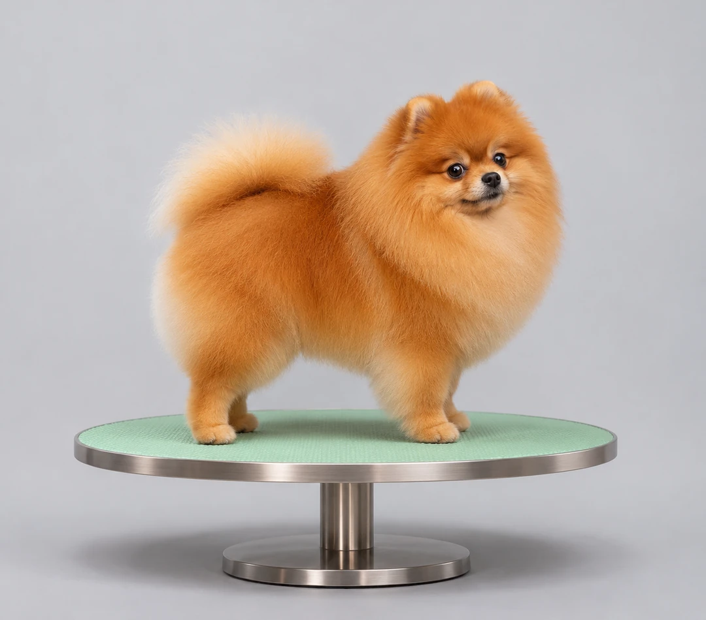
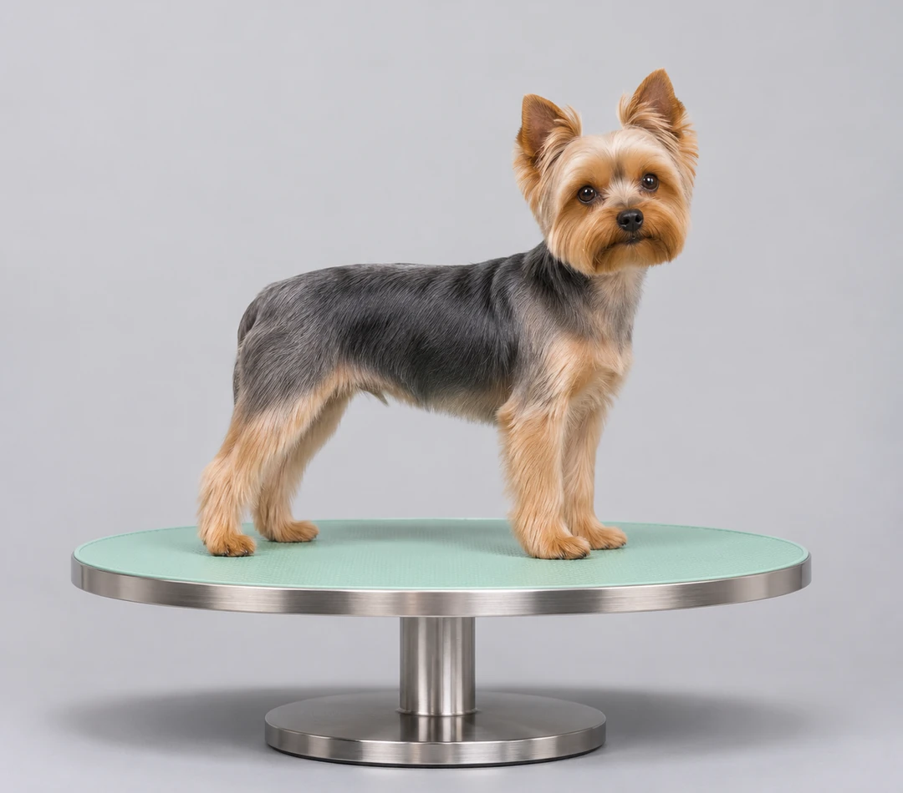

Пудель
Згенероване зображення, не робота салону
Кола побудови: 5 кіл і 3 овали · схема Velira
Голова, морда, вуха й помпон хвоста — кола; корпус — овал, лапи — витягнуті овали-колони.
- Ціна
- лише в хайлайті «PRICE», текстом не опублікована
Концепт Velira для Groomeister by Anna Kravchuk. Не офіційний сайт їхній Instagram
Грумінг-салон, SPA і навчання. Київ, Причальна, 12.

Згенероване зображення, не робота салону
Собаки на столі — згенеровані зображення, не роботи салону. Кола побудови поверх — схема Velira за темою майстер-класу Анни.
Той самий стіл і той самий ракурс: різниться лише геометрія. Собаки тут згенеровані, справжні роботи — в її хайлайтах з такими самими назвами.
Згенероване зображення, не робота салону
Кола побудови: 5 кіл і 3 овали · схема Velira
Голова, морда, вуха й помпон хвоста — кола; корпус — овал, лапи — витягнуті овали-колони.

Згенероване зображення, не робота салону
Кола побудови: 3 кола і 3 овали · схема Velira
Голова й морда — два кола, хвіст-плюмаж — велике коло над спиною; корпус — низький овал.

Згенероване зображення, не робота салону
Кола побудови: 4 кола і 3 овали · схема Velira
Найбільше коло схеми — голова; морда й вухо — малі кола поруч, корпус — широкий овал.

Згенероване зображення, не робота салону
Кола побудови: 5 кіл · схема Velira
Майже вся схема — одна куля: корпус разом із комірцем. Голова, морда, вухо й хвіст — кола поменше.

Згенероване зображення, не робота салону
Кола побудови: 4 кола і 3 овали · схема Velira
Найтонша схема: корпус — вузький овал, голова й два вушка — кола, ноги — вузькі овали.
Згенероване зображення, не робота салону
Згенероване зображення, не робота салону
Згенероване зображення, не робота салону
Згенероване зображення, не робота салону
Згенероване зображення, не робота салону
Пудель · кола побудови: 5 кіл і 3 овали
Щоб дізнатися ціну, зараз треба знайти хайлайт і гортати сторіз. На сайті він стоятиме таблицею: порода і ціна, з телефона за секунду. Поки Groomeister не опублікував прайс текстом, рядки порожні.
| Порода | Ціна | Де зараз |
|---|---|---|
| Пудельу хайлайті «PRICE» | ··· грн | хайлайт «PRICE» |
| Мальтезеу хайлайті «PRICE» | ··· грн | хайлайт «PRICE» |
| Мальтипуу хайлайті «PRICE» | ··· грн | хайлайт «PRICE» |
| Шпіцу хайлайті «PRICE» | ··· грн | хайлайт «PRICE» |
| Йорку хайлайті «PRICE» | ··· грн | хайлайт «PRICE» |
| SPAу хайлайті «SPA» | ··· грн | хайлайт «SPA» |
15 років в професіїбіо Instagram
3 міжнародні сертифікаціїбіо Instagram
Майстер-клас у Вроцлаві · 24–25 жовтня
«Геометрія азійського стилю, принципи формування лялькового ефекту»
Тема практичного курсу з постера в її Instagram. Звідси й кола побудови на схемах вище.

Ще в її хайлайтах: Навчання · Грумери · МК Вроцлав · Interzoo2026 · Корисне
Київ